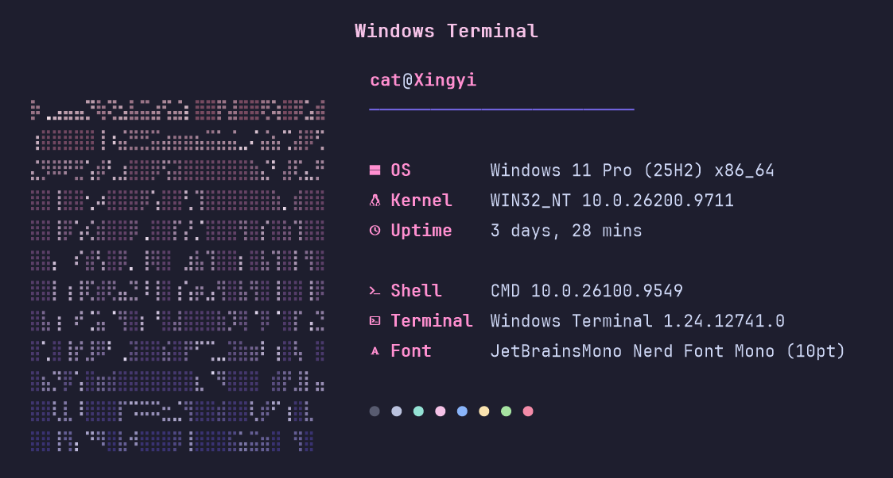
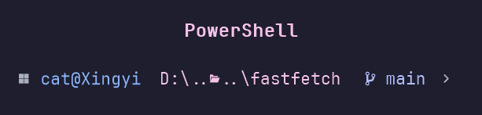

# both were rendered from the theme itself — the real font, the real palette

fastfetch — the braille cat, pre-tinted pink → violet

oh-my-posh prompt — the Catppuccin Mocha theme, served from disk, no network needed
02how it installs ────────────────────────────────────────────
❯double-click install.bat — it walks you through this:
── step 1 · the font ──
?JetBrainsMono Nerd Font not found. install it? [y/n](default y)
▸ y— grabbed from the nerd-fonts release, installed per-user. no admin window.
▸ n— skipped cleanly. the glyphs wait as boxes until you pick a font yourself.
── step 2 · the prompt ──
?oh-my-posh not found. install it? [y/n]
▸ y— winget. then the Mocha theme lands on disk and every PowerShell profile points at the local file, so the prompt works offline.
── step 3 · the window ──
?restyle Windows Terminal? [y/n]
▸ y— Mocha scheme, JBM NFM 10pt extra-black, acrylic at 80%, filled box cursor. a settings.json.bak is left next to it. always an undo.
── step 4 · the fetch ──
?install fastfetch? [y/n]
▸ y— winget again, then the config + the tinted cat land in %USERPROFILE%\.config\fastfetch, and fastfetch runs in front of you. that's the "it worked" moment.
# rerun it any time — every file is hash-checked. things that already match report
# as unchanged and nothing gets rewritten for the fun of it.
03get it ────────────────────────────────────────────────────